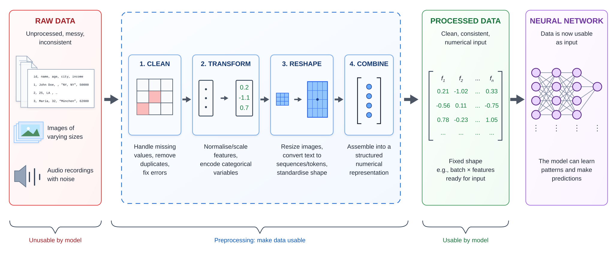

import random
from pathlib import Path
import joblib
import matplotlib.pyplot as plt
import numpy as np
import pandas as pd
from keras.models import Sequential
from keras.layers import Dense, Input
from keras.callbacks import EarlyStopping
import sklearn
from sklearn import set_config
from sklearn.model_selection import train_test_split
from sklearn.preprocessing import OneHotEncoder, OrdinalEncoder, StandardScaler
from sklearn.impute import SimpleImputer
from sklearn.compose import make_column_transformer
from sklearn.pipeline import make_pipeline
from sklearn.linear_model import LinearRegressionPreprocessing
ACTL3143 & ACTL5111 Deep Learning for Actuaries
Deep learning project life cycle
- Define objectives
- Collect & label data
- Clean & preprocess data (opt. feature engineering)
- Design network architecture
- Train and validate model
- Hyperparameter tuning
- Test and evaluate performance
- Deploy to production
- Monitor and iterate
(We won’t cover the italicised items in this course, though they are very important.)
Overview

Imports needed for these demos
Standardising the Numerical Covariates
California housing dataset
features, target = sklearn.datasets.fetch_california_housing(
as_frame=True, return_X_y=True)
features| MedInc | HouseAge | AveRooms | AveBedrms | Population | AveOccup | Latitude | Longitude | |
|---|---|---|---|---|---|---|---|---|
| 0 | 8.3252 | 41.0 | 6.984127 | 1.023810 | 322.0 | 2.555556 | 37.88 | -122.23 |
| 1 | 8.3014 | 21.0 | 6.238137 | 0.971880 | 2401.0 | 2.109842 | 37.86 | -122.22 |
| ... | ... | ... | ... | ... | ... | ... | ... | ... |
| 20638 | 1.8672 | 18.0 | 5.329513 | 1.171920 | 741.0 | 2.123209 | 39.43 | -121.32 |
| 20639 | 2.3886 | 16.0 | 5.254717 | 1.162264 | 1387.0 | 2.616981 | 39.37 | -121.24 |
20640 rows × 8 columns
Pandas will assign or guess dtypes
Can look at the data types of the features.
features.info()<class 'pandas.DataFrame'>
RangeIndex: 20640 entries, 0 to 20639
Data columns (total 8 columns):
# Column Non-Null Count Dtype
--- ------ -------------- -----
0 MedInc 20640 non-null float64
1 HouseAge 20640 non-null float64
2 AveRooms 20640 non-null float64
3 AveBedrms 20640 non-null float64
4 Population 20640 non-null float64
5 AveOccup 20640 non-null float64
6 Latitude 20640 non-null float64
7 Longitude 20640 non-null float64
dtypes: float64(8)
memory usage: 1.3 MBHere, all the features were continuous variables
Pandas can guess wrong though
For example, Australian postcodes are four digits and some start with 0 (e.g. Darwin is 0800). A CSV reader just sees digits, guesses a number, and silently drops the leading zero — giving the column the wrong type and the wrong value.
The raw file keeps the leading zero:
print(Path("data/postcodes.csv").read_text())suburb,postcode
Darwin,0800
Sydney,2000
Perth,6000
Default inference:
df = pd.read_csv("data/postcodes.csv")
df| suburb | postcode | |
|---|---|---|
| 0 | Darwin | 800 |
| 1 | Sydney | 2000 |
| 2 | Perth | 6000 |
df.dtypessuburb str
postcode int64
dtype: objectTyped at read time:
df = pd.read_csv("data/postcodes.csv",
dtype={"postcode": "string"})
df| suburb | postcode | |
|---|---|---|
| 0 | Darwin | 0800 |
| 1 | Sydney | 2000 |
| 2 | Perth | 6000 |
df.dtypessuburb str
postcode string
dtype: objectThe fix is to declare the type as you read the data, e.g. pd.read_csv(..., dtype={"postcode": "string"}) (or "category"), with parse_dates=[...] for any date columns. Fixing types at the point of ingestion is the cleanest place to do it: it preserves the leading zeros, it would raise an error if a value were not a valid number where one is expected, and every downstream step (plots, groupby, the column transformer) then sees the correct type. Don’t rely on the dtype alone to choose a feature’s modelling role, though — a binary 0/1 flag, a count, and an ID column are all integers, so the nominal/ordinal/continuous decision still belongs in your column transformer.
Splitting into train, validation and test sets
X_main, X_test_raw, y_main, y_test = train_test_split(
features, target, test_size=0.2, random_state=1
)
X_train_raw, X_val_raw, y_train, y_val = train_test_split(
X_main, y_main, test_size=0.25, random_state=1
)Note that we really cannot allow there to be duplicate rows in the training, validation, or test sets. If there are, we will have data leakage between the sets, which will lead to overfitting and poor generalisation.
Checking for leaks
We can look for rows that appear in multiple of the datasets.
train_val_overlap = pd.merge(X_train_raw, X_val_raw, how='inner')
train_test_overlap = pd.merge(X_train_raw, X_test_raw, how='inner')
val_test_overlap = pd.merge(X_val_raw, X_test_raw, how='inner')
print(f"Number of duplicated rows between train and val: {len(train_val_overlap)}")
print(f"Number of duplicated rows between train and test: {len(train_test_overlap)}")
print(f"Number of duplicated rows between val and test: {len(val_test_overlap)}")Number of duplicated rows between train and val: 0
Number of duplicated rows between train and test: 0
Number of duplicated rows between val and test: 0An earlier check is to check that there are no duplicate rows in the dataset.
features.duplicated().sum()np.int64(0)We rescaled every column
scaler = StandardScaler()
scaler.fit(X_train_raw)
X_train = scaler.transform(X_train_raw)
X_val = scaler.transform(X_val_raw)
X_test = scaler.transform(X_test_raw)
X_trainarray([[ 0.15, -0.76, 0.26, ..., -0.01, -0.47, 0.69],
[-1.79, -1.48, 0.48, ..., -0.08, -0.44, 1.33],
[-0.97, -0.13, -0.67, ..., 0.05, -0.86, 0.65],
...,
[ 0.11, -0.84, -0.54, ..., -0.03, -0.81, 0.6 ],
[-0.82, 0.99, -0.03, ..., -0.03, 0.54, -0.11],
[ 0.9 , -1.56, 0.66, ..., 0.07, -0.75, 0.97]], shape=(12384, 8))That is because the neural network expects continuous inputs to be normalised to help with the training procedure.
Basically, the initial starting point for the network is random weights and biases that assume a (roughly) standard normal kind of input, to keep the inner neuron values from overflowing or underflowing.
Note
Notice that the output of X_train here looks a bit different to X_train_raw earlier? We’ll touch on this in a couple of slides.
Scikit-learn preprocessing methods
fit: learn the parameters of the transformationtransform: apply the transformationfit_transform: learn the parameters and apply the transformation
scaler = StandardScaler()
scaler.fit(X_train_raw)
X_train = scaler.transform(X_train_raw)
X_val = scaler.transform(X_val_raw)
X_test = scaler.transform(X_test_raw)
print(X_train.mean(axis=0))
print(X_train.std(axis=0))
print(X_val.mean(axis=0))
print(X_val.std(axis=0))[ 1.14e-16 -1.08e-16 -2.82e-16 -4.45e-17 -6.89e-18 -4.02e-17 1.14e-15
1.75e-15]
[1. 1. 1. 1. 1. 1. 1. 1.]
[ 0.01 0.01 0. -0.01 -0. 0.01 0. -0.01]
[1.01 1. 0.81 0.81 0.98 0.84 0.99 1. ]scaler = StandardScaler()
X_train = scaler.fit_transform(X_train_raw)
X_val = scaler.transform(X_val_raw)
X_test = scaler.transform(X_test_raw)
print(X_train.mean(axis=0))
print(X_train.std(axis=0))
print(X_val.mean(axis=0))
print(X_val.std(axis=0))[ 1.14e-16 -1.08e-16 -2.82e-16 -4.45e-17 -6.89e-18 -4.02e-17 1.14e-15
1.75e-15]
[1. 1. 1. 1. 1. 1. 1. 1.]
[ 0.01 0.01 0. -0.01 -0. 0.01 0. -0.01]
[1.01 1. 0.81 0.81 0.98 0.84 0.99 1. ]Notice that when using fit_transform, this function is only used on the training set. Then, for the validation and test sets, the function transform is called, not fit_transform. It is important to make sure that the scaler is fitted using only the data from the train set, to avoid information leakage.
Dataframes & arrays
X_test_raw| MedInc | HouseAge | AveRooms | AveBedrms | Population | AveOccup | Latitude | Longitude | |
|---|---|---|---|---|---|---|---|---|
| 4712 | 3.2500 | 39.0 | 4.503205 | 1.073718 | 1109.0 | 1.777244 | 34.06 | -118.36 |
| 2151 | 1.9784 | 37.0 | 4.988584 | 1.038813 | 1143.0 | 2.609589 | 36.78 | -119.78 |
| ... | ... | ... | ... | ... | ... | ... | ... | ... |
| 6823 | 4.8750 | 42.0 | 5.347985 | 1.058608 | 829.0 | 3.036630 | 34.09 | -118.10 |
| 11878 | 2.7054 | 52.0 | 5.741214 | 1.060703 | 905.0 | 2.891374 | 33.99 | -117.38 |
4128 rows × 8 columns
X_testarray([[-0.33, 0.83, -0.34, ..., -0.11, -0.73, 0.6 ],
[-1. , 0.67, -0.16, ..., -0.04, 0.54, -0.1 ],
[ 0.07, 1.38, -0.35, ..., 0.06, 0.98, -1.42],
...,
[ 0.62, -0.21, -0.16, ..., 0.05, 0.92, -1.4 ],
[ 0.53, 1.07, -0.03, ..., -0. , -0.72, 0.73],
[-0.62, 1.86, 0.11, ..., -0.02, -0.77, 1.09]], shape=(4128, 8))
Note
By default, when you pass sklearn a DataFrame it returns a numpy array.
Keep as a DataFrame
From scikit-learn 1.2:
- 1
- Tells sklearn that any transformed data should stay as pandas dataframes.
- 2
-
Defines the
SimpleImputer. This function helps in dealing with missing values. Default is set tomean, meaning that, missing values in each column will be replaced with the column mean. - 3
- Finds the means of training set columns, and replaces train set missing values by those means.
- 4
- Replace missing values in the validation set by the means of the training set columns.
- 5
- Replace missing values in the test set by the means of the training set columns.
From SimpleImputer’s docs:
X_test| MedInc | HouseAge | AveRooms | AveBedrms | Population | AveOccup | Latitude | Longitude | |
|---|---|---|---|---|---|---|---|---|
| 4712 | 3.2500 | 39.0 | 4.503205 | 1.073718 | 1109.0 | 1.777244 | 34.06 | -118.36 |
| 2151 | 1.9784 | 37.0 | 4.988584 | 1.038813 | 1143.0 | 2.609589 | 36.78 | -119.78 |
| ... | ... | ... | ... | ... | ... | ... | ... | ... |
| 6823 | 4.8750 | 42.0 | 5.347985 | 1.058608 | 829.0 | 3.036630 | 34.09 | -118.10 |
| 11878 | 2.7054 | 52.0 | 5.741214 | 1.060703 | 905.0 | 2.891374 | 33.99 | -117.38 |
4128 rows × 8 columns
Replace missing values using a descriptive statistic (e.g. mean, median, or most frequent) along each column, or using a constant value… default=‘mean’
Handling Categorical Variables
French motor dataset
- 1
- Checks if the dataset does not already exist within the current directory.
- 2
-
Download the dataset from sklearn. The
fetch_openmlfunction allows the user to bring in the datasets available in the OpenML platform. Every dataset has a unique ID, hence, can be fetched by providing the ID.data_idof the French motor dataset is 41214. - 3
- Save it as a CSV file, so we don’t need to redownload it (slow!) next time.
- 4
- If it already exists, then read the dataset from the CSV file.
<class 'pandas.DataFrame'>
RangeIndex: 678013 entries, 0 to 678012
Data columns (total 12 columns):
# Column Non-Null Count Dtype
--- ------ -------------- -----
0 IDpol 678013 non-null float64
1 ClaimNb 678013 non-null float64
2 Exposure 678013 non-null float64
3 Area 678013 non-null str
4 VehPower 678013 non-null float64
5 VehAge 678013 non-null float64
6 DrivAge 678013 non-null float64
7 BonusMalus 678013 non-null float64
8 VehBrand 678013 non-null str
9 VehGas 678013 non-null str
10 Density 678013 non-null float64
11 Region 678013 non-null str
dtypes: float64(8), str(4)
memory usage: 70.4 MBThe data
freq| IDpol | ClaimNb | Exposure | Area | VehPower | VehAge | DrivAge | BonusMalus | VehBrand | VehGas | Density | Region | |
|---|---|---|---|---|---|---|---|---|---|---|---|---|
| 0 | 1.0 | 1.0 | 0.10000 | D | 5.0 | 0.0 | 55.0 | 50.0 | B12 | Regular | 1217.0 | R82 |
| 1 | 3.0 | 1.0 | 0.77000 | D | 5.0 | 0.0 | 55.0 | 50.0 | B12 | Regular | 1217.0 | R82 |
| 2 | 5.0 | 1.0 | 0.75000 | B | 6.0 | 2.0 | 52.0 | 50.0 | B12 | Diesel | 54.0 | R22 |
| ... | ... | ... | ... | ... | ... | ... | ... | ... | ... | ... | ... | ... |
| 678010 | 6114328.0 | 0.0 | 0.00274 | D | 6.0 | 2.0 | 45.0 | 50.0 | B12 | Diesel | 1323.0 | R82 |
| 678011 | 6114329.0 | 0.0 | 0.00274 | B | 4.0 | 0.0 | 60.0 | 50.0 | B12 | Regular | 95.0 | R26 |
| 678012 | 6114330.0 | 0.0 | 0.00274 | B | 7.0 | 6.0 | 29.0 | 54.0 | B12 | Diesel | 65.0 | R72 |
678013 rows × 12 columns
Data dictionary
IDpol: policy number (unique identifier)ClaimNb: number of claims on the given policyExposure: total exposure in yearly unitsArea: area code (categorical, ordinal)VehPower: power of the car (categorical, ordinal)VehAge: age of the car in yearsDrivAge: age of the (most common) driver in years
BonusMalus: bonus-malus level between 50 and 230 (with reference level 100)VehBrand: car brand (categorical, nominal)VehGas: diesel or regular fuel car (binary)Density: of inhabitants per km2 in the city of the living place of the driverRegion: regions in France (prior to 2016)
Our target variable is the number of claims, ClaimNb.
We have \{ (\mathbf{x}_i, y_i) \}_{i=1, \dots, n} for \mathbf{x}_i \in \mathbb{R}^{p} and y_i \in \mathbb{N}_0. Assume the distribution Y_i \sim \mathsf{Poisson}(\lambda(\mathbf{x}_i))
We have \mathbb{E} Y_i = \lambda(\mathbf{x}_i). The NN takes \mathbf{x}_i & predicts \mathbb{E} Y_i.
freq = freq.drop("IDpol", axis=1)While IDpol is a useful tool for checking duplicates, we remove it before beginning the modelling process.
Split the data
- 1
-
Splits the dataset into train and test sets. By setting the
random_stateto a specific number, we ensure the consistency in the train-test split.freq.drop("ClaimNb", axis=1)removes the “ClaimNb” column. - 2
- Resets the index of train set, and drops the previous index column. Since the index column will get shuffled during the train-test split, we may want to reset the index to start from 0 again.
| Exposure | Area | VehPower | VehAge | DrivAge | BonusMalus | VehBrand | VehGas | Density | Region | |
|---|---|---|---|---|---|---|---|---|---|---|
| 0 | 0.01 | A | 4.0 | 0.0 | 70.0 | 50.0 | B12 | Regular | 37.0 | R72 |
| 1 | 1.00 | C | 6.0 | 11.0 | 36.0 | 50.0 | B3 | Regular | 119.0 | R82 |
| 2 | 0.08 | D | 7.0 | 9.0 | 35.0 | 50.0 | B2 | Diesel | 1326.0 | R93 |
| ... | ... | ... | ... | ... | ... | ... | ... | ... | ... | ... |
| 508506 | 0.22 | E | 7.0 | 21.0 | 32.0 | 90.0 | B5 | Regular | 4128.0 | R52 |
| 508507 | 1.00 | C | 7.0 | 15.0 | 51.0 | 50.0 | B1 | Regular | 461.0 | R53 |
| 508508 | 0.42 | D | 6.0 | 1.0 | 37.0 | 54.0 | B2 | Diesel | 1284.0 | R25 |
508509 rows × 10 columns
What values do we see in the data?
X_train_raw["Area"].value_counts()
X_train_raw["VehBrand"].value_counts()
X_train_raw["VehGas"].value_counts()
X_train_raw["Region"].value_counts()Area
C 144156
D 113532
E 102791
A 78017
B 56571
F 13442
Name: count, dtype: int64VehBrand
B12 124490
B1 122200
B2 120155
...
B11 10218
B13 9160
B14 2998
Name: count, Length: 11, dtype: int64VehGas
Regular 259422
Diesel 249087
Name: count, dtype: int64Region
R24 120597
R82 63555
R93 59627
...
R21 2283
R42 1634
R43 1024
Name: count, Length: 22, dtype: int64data["column_name"].value_counts() function provides counts of each category for a categorical variable. In this dataset, variables Area and VehGas are assumed to have natural orderings (ordinal categorical variables) whereas VehBrand and Region are not considered to have such natural orderings (nominal categorical variables). Therefore, the two sets of categorical variables will have to be treated differently.
Nominal categorical variables
These are categorical variables which you cannot order in a ‘default’ sensible way.
There are two options for dealing with a nominal categorical variable:
- One-hot encoding: one column for each category (taking the value 1 if true, 0 if false). Using this method, one of the columns is redundant.
- Dummy encoding: drop the first of the one-hot encoding categories.
gas = X_train_raw[["VehGas"]]The original data:
gas.head()| VehGas | |
|---|---|
| 0 | Regular |
| 1 | Regular |
| 2 | Diesel |
| 3 | Regular |
| 4 | Diesel |
One-hot encoding
enc = OneHotEncoder(sparse_output=False)
X_train = enc.fit_transform(gas)
X_train.head()| VehGas_Diesel | VehGas_Regular | |
|---|---|---|
| 0 | 0.0 | 1.0 |
| 1 | 0.0 | 1.0 |
| 2 | 1.0 | 0.0 |
| 3 | 0.0 | 1.0 |
| 4 | 1.0 | 0.0 |
Dummy encoding
enc = OneHotEncoder(
drop="first",
sparse_output=False)
X_train = enc.fit_transform(gas)
X_train.head()| VehGas_Regular | |
|---|---|
| 0 | 1.0 |
| 1 | 1.0 |
| 2 | 0.0 |
| 3 | 1.0 |
| 4 | 0.0 |
Warning
Collinearity is not a big deal for neural networks. However if you want to reuse the same X_train data for a (generalised) linear regression, then you probably want to dummy-encode here to avoid needing two different preprocessing regimes for the two competing models.
Ordinal categorical variables
These are categorical variables which have a natural order to them.
OrdinalEncoder can assign numerical values to each category of the ordinal variable. The nice thing about OrdinalEncoder is that it can preserve the information about ordinal relationships in the data. To actually convert the values in the ordinal columns, we must also apply the enc.transform method. The following lines of code show how we consistently apply the transform function to both train and test sets. To avoid inconsistencies in encoding, we use enc.fit function only to the train set.
- 1
-
Create an
OrdinalEncoderobject namedenc - 2
-
Selects the two columns with ordinal variables from
X_trainand fits the ordinal encoder - 3
- Gives out the number of unique categories in each ordinal variable
[array(['A', 'B', 'C', 'D', 'E', 'F'], dtype=object)]for i, area in enumerate(enc.categories_[0]):
print(f"The Area value {area} gets turned into {i}.")The Area value A gets turned into 0.
The Area value B gets turned into 1.
The Area value C gets turned into 2.
The Area value D gets turned into 3.
The Area value E gets turned into 4.
The Area value F gets turned into 5.print(f"In other words, {' < '.join(enc.categories_[0])}, and ")
print(" = ".join(f"{r} - {l}" for l, r in zip(enc.categories_[0][:-1], enc.categories_[0][1:])))In other words, A < B < C < D < E < F, and
B - A = C - B = D - C = E - D = F - EOrdinal encoded values
Note that fitting an ordinal encoder (enc.fit) only establishes the mapping between numerical values and ordinal variable levels. To actually convert the values in the ordinal columns, we must also apply the enc.transform function. The following lines of code show how we consistently apply the transform function to both train and test sets. To avoid inconsistencies in encoding, we use enc.fit function only to the train set.
X_train = enc.transform(X_train_raw[["Area"]])
X_test = enc.transform(X_test_raw[["Area"]])X_train_raw[["Area"]].head()| Area | |
|---|---|
| 0 | A |
| 1 | C |
| 2 | D |
| 3 | E |
| 4 | B |
X_train.head()| Area | |
|---|---|
| 0 | 0.0 |
| 1 | 2.0 |
| 2 | 3.0 |
| 3 | 4.0 |
| 4 | 1.0 |
We could train on this X_train, or on the previous X_train, but each only contains one feature from the dataset. How do we add the continuous variables back in? Use a sklearn column transformer for that.
Transform all columns in one hit I
- 1
- Starts defining the column transformer object
- 2
- Apply dummy encoding to the nominal categorical columns
- 3
- Apply ordinal encoding to the ordinal categorical column
- 4
- Standardise the remaining columns (which are all numerical)
- 5
- Fits and transforms the train set using this new column transformer
X_train_raw| Exposure | Area | VehPower | VehAge | DrivAge | BonusMalus | VehBrand | VehGas | Density | Region | |
|---|---|---|---|---|---|---|---|---|---|---|
| 0 | 0.01 | A | 4.0 | 0.0 | 70.0 | 50.0 | B12 | Regular | 37.0 | R72 |
| ... | ... | ... | ... | ... | ... | ... | ... | ... | ... | ... |
| 508508 | 0.42 | D | 6.0 | 1.0 | 37.0 | 54.0 | B2 | Diesel | 1284.0 | R25 |
508509 rows × 10 columns
X_train| onehotencoder__VehGas_Regular | onehotencoder__VehBrand_B10 | onehotencoder__VehBrand_B11 | onehotencoder__VehBrand_B12 | onehotencoder__VehBrand_B13 | onehotencoder__VehBrand_B14 | onehotencoder__VehBrand_B2 | onehotencoder__VehBrand_B3 | onehotencoder__VehBrand_B4 | onehotencoder__VehBrand_B5 | ... | onehotencoder__Region_R91 | onehotencoder__Region_R93 | onehotencoder__Region_R94 | ordinalencoder__Area | remainder__Exposure | remainder__VehPower | remainder__VehAge | remainder__DrivAge | remainder__BonusMalus | remainder__Density | |
|---|---|---|---|---|---|---|---|---|---|---|---|---|---|---|---|---|---|---|---|---|---|
| 0 | 1.0 | 0.0 | 0.0 | 1.0 | 0.0 | 0.0 | 0.0 | 0.0 | 0.0 | 0.0 | ... | 0.0 | 0.0 | 0.0 | 0.0 | -1.424715 | -1.196660 | -1.245210 | 1.732277 | -0.623438 | -0.442987 |
| ... | ... | ... | ... | ... | ... | ... | ... | ... | ... | ... | ... | ... | ... | ... | ... | ... | ... | ... | ... | ... | ... |
| 508508 | 0.0 | 0.0 | 0.0 | 0.0 | 0.0 | 0.0 | 1.0 | 0.0 | 0.0 | 0.0 | ... | 0.0 | 0.0 | 0.0 | 3.0 | -0.299951 | -0.221191 | -1.068474 | -0.602450 | -0.367372 | -0.127782 |
508509 rows × 39 columns
The default column names of X_train that the column transformer adds are a bit obscure/verbose. We can add the verbose_feature_names_out=False flag to have a cleaner X_train dataframe.
Transform all columns in one hit II
ct = make_column_transformer(
(OneHotEncoder(sparse_output=False, drop="first"), ["VehGas", "VehBrand", "Region"]),
(OrdinalEncoder(), ["Area"]),
remainder=StandardScaler(),
verbose_feature_names_out=False
)
X_train = ct.fit_transform(X_train_raw)X_train_raw| Exposure | Area | VehPower | VehAge | DrivAge | BonusMalus | VehBrand | VehGas | Density | Region | |
|---|---|---|---|---|---|---|---|---|---|---|
| 0 | 0.01 | A | 4.0 | 0.0 | 70.0 | 50.0 | B12 | Regular | 37.0 | R72 |
| ... | ... | ... | ... | ... | ... | ... | ... | ... | ... | ... |
| 508508 | 0.42 | D | 6.0 | 1.0 | 37.0 | 54.0 | B2 | Diesel | 1284.0 | R25 |
508509 rows × 10 columns
X_train| VehGas_Regular | VehBrand_B10 | VehBrand_B11 | VehBrand_B12 | VehBrand_B13 | VehBrand_B14 | VehBrand_B2 | VehBrand_B3 | VehBrand_B4 | VehBrand_B5 | ... | Region_R91 | Region_R93 | Region_R94 | Area | Exposure | VehPower | VehAge | DrivAge | BonusMalus | Density | |
|---|---|---|---|---|---|---|---|---|---|---|---|---|---|---|---|---|---|---|---|---|---|
| 0 | 1.0 | 0.0 | 0.0 | 1.0 | 0.0 | 0.0 | 0.0 | 0.0 | 0.0 | 0.0 | ... | 0.0 | 0.0 | 0.0 | 0.0 | -1.424715 | -1.196660 | -1.245210 | 1.732277 | -0.623438 | -0.442987 |
| ... | ... | ... | ... | ... | ... | ... | ... | ... | ... | ... | ... | ... | ... | ... | ... | ... | ... | ... | ... | ... | ... |
| 508508 | 0.0 | 0.0 | 0.0 | 0.0 | 0.0 | 0.0 | 1.0 | 0.0 | 0.0 | 0.0 | ... | 0.0 | 0.0 | 0.0 | 3.0 | -0.299951 | -0.221191 | -1.068474 | -0.602450 | -0.367372 | -0.127782 |
508509 rows × 39 columns
An important thing to notice here is that the order of columns has changed. They are rearranged according to the order in which we specify the transformations inside the column transformer.
Aside: The order of the variables matters
Sometimes the ordinal categories are named with words, such as “Low”, “Medium”, “High” (rather than, for example, “A”, “B”, “C”). The ordinal encoder does not know how to read these and orders the categories based on alphabetical order.
X_train_raw["Area_In_Words"] = X_train_raw["Area"].map({
"A": "Very low", "B": "Low", "C": "Medium",
"D": "High", "E": "Very high", "F": "Extremely high"
})enc_wrong = OrdinalEncoder()
enc_wrong.fit(X_train_raw[["Area_In_Words"]])
enc_wrong.categories_ [array(['Extremely high', 'High', 'Low', 'Medium', 'Very high', 'Very low'],
dtype=object)]for i, area in enumerate(enc_wrong.categories_[0]):
print(f"The Area value {area} gets turned into {i}.")The Area value Extremely high gets turned into 0.
The Area value High gets turned into 1.
The Area value Low gets turned into 2.
The Area value Medium gets turned into 3.
The Area value Very high gets turned into 4.
The Area value Very low gets turned into 5.print(f"In other words, {' < '.join(enc_wrong.categories_[0])}.")In other words, Extremely high < High < Low < Medium < Very high < Very low.Aside: Manually set the order
To fix this issue, we need to manually set the order.
ordered = [["Very low", "Low", "Medium", "High", "Very high", "Extremely high"]]
enc_right = OrdinalEncoder(categories=ordered)
enc_right.fit(X_train_raw[["Area_In_Words"]])
enc_right.categories_ [array(['Very low', 'Low', 'Medium', 'High', 'Very high', 'Extremely high'],
dtype=object)]for i, area in enumerate(enc_right.categories_[0]):
print(f"The Area value {area} gets turned into {i}.")The Area value Very low gets turned into 0.
The Area value Low gets turned into 1.
The Area value Medium gets turned into 2.
The Area value High gets turned into 3.
The Area value Very high gets turned into 4.
The Area value Extremely high gets turned into 5.print(f"In other words, {' < '.join(enc_right.categories_[0])}.")In other words, Very low < Low < Medium < High < Very high < Extremely high.X_train_raw = X_train_raw.drop("Area_In_Words", axis=1)Missing Values and Rare Observations
Stroke prediction dataset
Dataset source: Kaggle Stroke Prediction Dataset.
RAW_DATA_DIR = Path("stroke/raw")
data = pd.read_csv(RAW_DATA_DIR / "stroke.csv")
data.head()| id | gender | age | hypertension | heart_disease | ever_married | work_type | Residence_type | avg_glucose_level | bmi | smoking_status | stroke | |
|---|---|---|---|---|---|---|---|---|---|---|---|---|
| 0 | 9046 | Male | 67.0 | 0 | 1 | Yes | Private | Urban | 228.69 | 36.6 | formerly smoked | 1 |
| 1 | 51676 | Female | 61.0 | 0 | 0 | Yes | Self-employed | Rural | 202.21 | NaN | never smoked | 1 |
| 2 | 31112 | Male | 80.0 | 0 | 1 | Yes | Private | Rural | 105.92 | 32.5 | never smoked | 1 |
| 3 | 60182 | Female | 49.0 | 0 | 0 | Yes | Private | Urban | 171.23 | 34.4 | smokes | 1 |
| 4 | 1665 | Female | 79.0 | 1 | 0 | Yes | Self-employed | Rural | 174.12 | 24.0 | never smoked | 1 |
Data description
id: unique identifiergender: “Male”, “Female” or “Other”age: age of the patienthypertension: 0 or 1 if the patient has hypertensionheart_disease: 0 or 1 if the patient has any heart diseaseever_married: “No” or “Yes”work_type: “children”, “Govt_job”, “Never_worked”, “Private” or “Self-employed”
Residence_type: “Rural” or “Urban”avg_glucose_level: average glucose level in bloodbmi: body mass indexsmoking_status: “formerly smoked”, “never smoked”, “smokes” or “Unknown”stroke: 0 or 1 if the patient had a stroke
Target: stroke.
Look for missing values and split the data
First, look for missing values.
number_missing = data.isna().sum()
number_missing[number_missing > 0]bmi 201
dtype: int64
Tip
Always take a look at the missing data in, say, Excel. Sometimes pandas reads in a category like “None” and interprets that as a missing value, when it’s really a valid category. This happened to me just the other day.
features = data.drop(["id", "stroke"], axis=1)
target = data["stroke"]
X_main_raw, X_test_raw, y_main, y_test = train_test_split(
features, target, test_size=0.2, random_state=7)
X_train_raw, X_val_raw, y_train, y_val = train_test_split(
X_main_raw, y_main, test_size=0.25, random_state=12)
X_train_raw.shape, X_val_raw.shape, X_test_raw.shape((3066, 10), (1022, 10), (1022, 10))What values do we see in the data?
X_train_raw["gender"].value_counts()gender
Female 1802
Male 1264
Name: count, dtype: int64X_train_raw["ever_married"].value_counts()ever_married
Yes 2007
No 1059
Name: count, dtype: int64X_train_raw["Residence_type"].value_counts()Residence_type
Urban 1536
Rural 1530
Name: count, dtype: int64X_train_raw["work_type"].value_counts()work_type
Private 1754
Self-employed 490
children 419
Govt_job 390
Never_worked 13
Name: count, dtype: int64X_train_raw["smoking_status"].value_counts()smoking_status
never smoked 1130
Unknown 944
formerly smoked 522
smokes 470
Name: count, dtype: int64Group sparse categories
Look for sparse categories. One common trick is to lump together all the small categories (e.g. < 5% or 10% each) into a new combined ‘OTHER’ or ‘RARE’ category. The OneHotEncoder can group infrequent levels for us.
X_train_raw["work_type"].value_counts()work_type
Private 1754
Self-employed 490
children 419
Govt_job 390
Never_worked 13
Name: count, dtype: int64Lump together any level below 5% of the rows:
enc = OneHotEncoder(sparse_output=False,
min_frequency=0.05)
ohe = enc.fit_transform(X_train_raw[["work_type"]])
enc.infrequent_categories_[array(['Never_worked'], dtype=object)]ohe.head(3)| work_type_Govt_job | work_type_Private | work_type_Self-employed | work_type_children | work_type_infrequent_sklearn | |
|---|---|---|---|---|---|
| 1914 | 0.0 | 1.0 | 0.0 | 0.0 | 0.0 |
| 1958 | 0.0 | 0.0 | 0.0 | 1.0 | 0.0 |
| 2920 | 0.0 | 1.0 | 0.0 | 0.0 | 0.0 |
Keep the most common levels, capping the column count:
enc = OneHotEncoder(sparse_output=False,
max_categories=3)
ohe = enc.fit_transform(X_train_raw[["work_type"]])
enc.infrequent_categories_[array(['Govt_job', 'Never_worked', 'children'], dtype=object)]ohe.head(3)| work_type_Private | work_type_Self-employed | work_type_infrequent_sklearn | |
|---|---|---|---|
| 1914 | 1.0 | 0.0 | 0.0 |
| 1958 | 0.0 | 0.0 | 1.0 |
| 2920 | 1.0 | 0.0 | 0.0 |
The lumped levels are combined into a single work_type_infrequent_sklearn column, and the infrequent_categories_ attribute records exactly which levels were grouped. Use min_frequency to set the threshold below which a level is treated as infrequent (an integer count, or a float proportion of the rows), or max_categories to cap the total number of output columns. Because the encoder learns the rare levels from the training set only, this avoids the data leakage you could accidentally introduce by hand-coding the grouping yourself. It also composes with handle_unknown="infrequent_if_exist", which sends any unseen category at test time into the same infrequent column.
Make a plan for preprocessing each column
- Take categorical columns \hookrightarrow one-hot vectors
- binary columns \hookrightarrow do nothing (already 0 & 1)
- continuous columns \hookrightarrow impute NaNs & standardise.
Make the column transformer
1nom_vars = ["gender", "ever_married", "Residence_type",
"work_type", "smoking_status"]
ct = make_column_transformer(
2 (OneHotEncoder(sparse_output=False, handle_unknown="ignore"), nom_vars),
3 ("passthrough", ["hypertension", "heart_disease"]),
4 remainder=make_pipeline(SimpleImputer(), StandardScaler()),
verbose_feature_names_out=False
)
X_train = ct.fit_transform(X_train_raw)
X_val = ct.transform(X_val_raw)
X_test = ct.transform(X_test_raw)
5for name, X in zip(("train", "val", "test"), (X_train, X_val, X_test)):
num_na = pd.DataFrame(X).isna().sum().sum()
print(f"The {name} set has shape {X.shape} & with {num_na} NAs.")- 1
-
Stores categorical variables in
nom_vars - 2
-
Specifies the one-hot encoding for all categorical variables. We set the
sparse_output=False, to return a dense array rather than a sparse matrix.handle_unknownspecifies how the neural network should handle unseen categories. By settinghandle_unknown="ignore", we instruct the neural network to ignore categories that were not seen during training. If we did not do this, it would interrupt the model’s operation after deployment - 3
-
Passes through
hypertensionandheart_diseasewithout any preprocessing - 4
-
Makes a pipeline that first applies
SimpleImputer()to replace missing values with the mean and then appliesStandardScaler()to scale the numerical values - 5
-
Prints out the missing values to ensure the
SimpleImputer()has worked
The train set has shape (3066, 20) & with 0 NAs.
The val set has shape (1022, 20) & with 0 NAs.
The test set has shape (1022, 20) & with 0 NAs.Handling unseen categories
X_train_raw["gender"].value_counts()gender
Female 1802
Male 1264
Name: count, dtype: int64X_val_raw["gender"].value_counts()gender
Female 615
Male 406
Other 1
Name: count, dtype: int64Because of the way the train and test sets were split, the one-hot encoder could not pick up on the third category. This could interrupt the model performance. To avoid such confusions, we could either give instructions manually on how to tackle unseen categories. An example is given below. In the second row, the values given for gender_Female and gender_Male are both 0, implying a third category.
ind = np.argmax(X_val_raw["gender"] == "Other")
X_val_raw.iloc[ind-1:ind+3][["gender"]]| gender | |
|---|---|
| 4970 | Male |
| 3116 | Other |
| 4140 | Male |
| 2505 | Female |
gender_cols = pd.DataFrame(X_val)[["gender_Female", "gender_Male"]]
gender_cols.iloc[ind-1:ind+3]| gender_Female | gender_Male | |
|---|---|---|
| 4970 | 0.0 | 1.0 |
| 3116 | 0.0 | 0.0 |
| 4140 | 0.0 | 1.0 |
| 2505 | 1.0 | 0.0 |
However, to give such instructions on handling unseen categories, we would first have to know what those possible categories could be. We should also have specific knowledge on what value to assign in case they come up during model performance. One easy way to tackle it would be to use handle_unknown="ignore" during encoding, as mentioned before.
Handling unseen categories II
This was caused by fitting the encoder on the X_train which, by bad luck, didn’t have the “Other” category. Why not just read the entire dataset before splitting to collect all the values the categorical variables could take?
It’s a very mild form of data leakage, though it may be justifiable in some cases. If we made the datasets, we’d have a better idea of whether it makes sense on a case-by-case basis. We struggle here as we (in this course) are just analysing datasets which we didn’t collect.
Procedures to Keep Your Data Organised
Directory structure
A popular convention (from Cookiecutter Data Science) splits data/ by how far along the data is:
data/
├── raw/ # original, never edited
├── interim/ # cleaned, still readable
└── processed/ # final, model-readyraw/is immutable — never overwrite it, so the whole pipeline can always be rebuilt from scratch.interim/is data that can be recreated from raw & a preprocessing script.processed/is what the model loads: split, encoded and scaled.
interim/ holds data that is nearly model-ready but still human-readable — after cleaning, joining and splitting, but before rescaling strips the units and one-hot encoding turns everything into a wall of 0s and 1s.
- You can open it and eyeball it: ages still look like ages, premiums still in dollars.
- It caches slow steps (parsing, joining, geocoding) so tweaking the final features doesn’t re-run them.
- It keeps
processed/unambiguous — one obvious file per train/validation/test split.
Save the preprocessed data to files
PROCESSED_DATA_DIR = Path("stroke/processed")
PROCESSED_DATA_DIR.mkdir(parents=True, exist_ok=True)
X_train.to_csv(PROCESSED_DATA_DIR / "x_train.csv", index=False)
X_val.to_csv(PROCESSED_DATA_DIR / "x_val.csv", index=False)
X_test.to_csv(PROCESSED_DATA_DIR / "x_test.csv", index=False)
y_train.to_csv(PROCESSED_DATA_DIR / "y_train.csv", index=False)
y_val.to_csv(PROCESSED_DATA_DIR / "y_val.csv", index=False)
y_test.to_csv(PROCESSED_DATA_DIR / "y_test.csv", index=False)Keep the preprocessor around
Later want to make a prediction on some new data point. It has to go through the exact same preprocessing steps.
We can save the preprocessing column transformer and save it to a file to use later.
joblib.dump(ct, PROCESSED_DATA_DIR / "preprocessor.pkl")
preprocessor = joblib.load(PROCESSED_DATA_DIR / "preprocessor.pkl")X_test_raw.head(1)| gender | age | hypertension | heart_disease | ever_married | work_type | Residence_type | avg_glucose_level | bmi | smoking_status | |
|---|---|---|---|---|---|---|---|---|---|---|
| 2804 | Female | 69.0 | 0 | 0 | Yes | Govt_job | Rural | 70.98 | 30.0 | Unknown |
new_data = X_test_raw.head(1).copy()
new_data["ever_married"] = "No" # Let's pretend this is the new data pointct.transform(new_data)| gender_Female | gender_Male | ever_married_No | ever_married_Yes | Residence_type_Rural | Residence_type_Urban | work_type_Govt_job | work_type_Never_worked | work_type_Private | work_type_Self-employed | work_type_children | smoking_status_Unknown | smoking_status_formerly smoked | smoking_status_never smoked | smoking_status_smokes | hypertension | heart_disease | age | avg_glucose_level | bmi | |
|---|---|---|---|---|---|---|---|---|---|---|---|---|---|---|---|---|---|---|---|---|
| 2804 | 1.0 | 0.0 | 1.0 | 0.0 | 1.0 | 0.0 | 1.0 | 0.0 | 0.0 | 0.0 | 0.0 | 1.0 | 0.0 | 0.0 | 0.0 | 0 | 0 | 1.154917 | -0.778758 | 0.147508 |
preprocessor.transform(new_data)| gender_Female | gender_Male | ever_married_No | ever_married_Yes | Residence_type_Rural | Residence_type_Urban | work_type_Govt_job | work_type_Never_worked | work_type_Private | work_type_Self-employed | work_type_children | smoking_status_Unknown | smoking_status_formerly smoked | smoking_status_never smoked | smoking_status_smokes | hypertension | heart_disease | age | avg_glucose_level | bmi | |
|---|---|---|---|---|---|---|---|---|---|---|---|---|---|---|---|---|---|---|---|---|
| 2804 | 1.0 | 0.0 | 1.0 | 0.0 | 1.0 | 0.0 | 1.0 | 0.0 | 0.0 | 0.0 | 0.0 | 1.0 | 0.0 | 0.0 | 0.0 | 0 | 0 | 1.154917 | -0.778758 | 0.147508 |
References
Noll, A., Salzmann, R., & Wüthrich, M. V. (2020). Case study: French motor third-party liability claims. SSRN Manuscript 3164764.
Glossary
- column transformer
- nominal variables
- ordinal variables
- one-hot encoding
- missing values
- imputation
- raw / interim / processed data
- standardisation